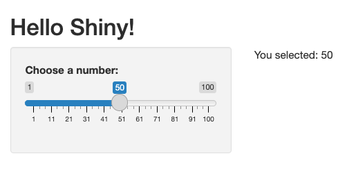

8 Introduction to Shiny
Objectives
- Know what shiny is and what problems it solves.
- See how a basic shiny app is structured and executed.
- Be able to describe reactive programming at a high level.
- Recognise common use cases for
shiny, and its limitations.
8.1 What is Shiny?
Shiny is an R package that makes it easy to build interactive web applications directly from R. Developed by RStudio (now Posit), Shiny allows users to turn analyses into interactive dashboards and tools without requiring knowledge of HTML, CSS, or JavaScript.
Shiny apps are especially useful for sharing data analyses with others, enabling users to explore data and results dynamically through a web browser. This interactivity helps bridge the gap between static reports and fully custom web applications.
Key features of Shiny include: - Seamless integration with R code and packages. - Automatic UI updates in response to user input. - Support for a wide range of input and output widgets. - Ability to deploy apps locally or on the web (e.g., via shinyapps.io or Shiny Server).
8.2 Basic Structure of a Shiny App
A basic Shiny app consists of two main components:
- UI (User Interface): Defines the layout and appearance of the app.
- Server: Contains the instructions for how the app responds to user input.
Here is a minimal example of a Shiny app:
library(shiny)
ui <- fluidPage(
titlePanel("Hello Shiny!"),
sidebarLayout(
sidebarPanel(
sliderInput("num", "Choose a number:", 1, 100, 50)
),
mainPanel(
textOutput("result")
)
)
)
server <- function(input, output, session) {
output$result <- renderText({
paste("You selected:", input$num)
})
}
shinyApp(ui, server)The variable ui describes a simple user interface. The code entered into fluidPage is translated into an HTML page dynamically (using the bootstrap CSS library). The variable server describes the “back-end” server that waits for input from the UI. When the user changes something on the UI, the server function is called with the input. We can modify the output, and it is automatically passed back to the UI. This triggers the mainPanel variable to render the output stored in the result variable to the UI.
The example above produces the following output:

8.3 How Shiny Apps are Executed
Running Shiny apps within Quarto is not possible; they need to be written in R scripts. There are several ways to run Shiny apps in development:
- In an interactive session, type the code
shinyApp(ui, server). - Pass the app file name to the Shiny function
runApp. - By clicking the “Run App” button in RStudio, that appears when you open a shiny app.
In all of the above, Shiny will start a web server on your computer. You should see an output that looks like:
Listening on http://127.0.0.1:3689
Browsing http://127.0.0.1:3689This gives you a URL that you can enter into your browser to interact with the app. In RStudio the app will be opened automatically in a new window.
The execution flow is as follows:
- Initialization: The UI is generated and displayed in the browser.
- User Interaction: When a user interacts with an input (e.g., moves a slider), the browser sends the new input value to the server.
- Reactivity: The server detects which outputs depend on the changed input and recalculates them.
- Output Update: The updated outputs are sent back to the browser and displayed instantly.
You can run Shiny apps:
- Locally: Directly from your R session, accessible only on your machine.
- Remotely: By deploying to a server (e.g., shinyapps.io), making the app accessible to others via a web link.
This architecture allows for real-time, interactive data exploration without requiring users to install R or any packages.
8.4 Reactive Programming
Reactive programming is a programming paradigm centred around the propagation of changes. In Shiny, this means that outputs automatically update in response to changes in inputs, without the need for explicit instructions to recalculate or redraw.
Shiny achieves this through a system of “reactive expressions” and “reactive values.” When a user interacts with an input widget (like a slider or text box), Shiny tracks which outputs depend on that input. Only the affected outputs are recalculated and updated, making the app efficient and responsive.
Key concepts in Shiny’s reactive programming:
- Inputs: User interface elements that collect information from the user (e.g., sliders, text boxes).
- Outputs: UI elements that display results or visualizations, updated automatically when their dependencies change.
- Reactive expressions: Special functions (created with
reactive()) that cache their results and only re-execute when their inputs change. - Observers: Code blocks (created with
observe()orobserveEvent()) that perform actions in response to changes, such as updating UI elements or triggering side effects.
We have already seen inputs and outputs; now we will talk about reactive expressions and observers.
8.4.1 Reactive Expressions
Reactivity in Shiny is the mechanism by which code automatically updates when inputs, or other reactive values, change. In the previous code block we already used a reactive function: renderText. This ensures that the server is called - and therefore the UI is updated - whenever input$num changes. In the background, R is building a graph of dependencies on values from the UI, and updates only the appropriate parts of the server logic when the dependencies change.
There are multiple other reactive functions
reactive({...}): define a reactive expression that can be re-used in multiple places.reactiveVal: define new reactive values that you can then get or set.renderText,renderPlot,renderTable,renderUI: create outputs for the UI.
Here is an example in which we use reactive and renderPlot to make more complex logic.
library(shiny)
library(ggplot2)
ui <- fluidPage(
fluidRow(
column(
2,
numericInput("mu1", label = "$\\mu_1$", value = -1),
numericInput("mu2", label = "$\\mu_2$", value = 1)
),
column(9, plotOutput("plot"))
)
)
server <- function(input, output, session) {
x1 <- data.frame(x = rnorm(500, input$mu1, 1))
x2 <- data.frame(x = rnorm(500, input$mu2, 1))
output$plot <- renderPlot(
{
ggplot() +
geom_freqpoly(data = x1, aes(x), color = "red", binwidth = 0.5, size = 1) +
geom_freqpoly(data = x2, aes(x), color = "blue", binwidth = 0.5, size = 1) +
coord_cartesian(xlim = c(-5, 5))
},
res = 96
)
}
shinyApp(ui, server)8.4.2 Observers
Observers are another way to introduce reactivity. Whereas reactive statements typically return values and are designed to give reusable expressions, observe statements do not return values, and are used when one might want to run code with side effects (e.g. for logging) or to trigger UI updates manually.
The two main observer functions are:
observe({...}): triggers if any reactive value inside the block changesobserveEvent(event, {...}): explicitly triggered only by the event specified.
Here’s an example showing how observeEvent can be used to run code on button clicks.
library(shiny)
ui <- fluidPage(
actionButton("inc", "Increase counter"),
actionButton("reset", "Reset counter"),
textOutput("value")
)
server <- function(input, output, session) {
# Create a reactiveVal starting at 0
counter <- reactiveVal(0)
# Increase counter when 'inc' button is clicked
observeEvent(input$inc, {
counter(counter() + 1) # update value
})
# Reset counter when 'reset' button is clicked
observeEvent(input$reset, {
counter(0)
})
# Display the current value
output$value <- renderText({
paste("Counter is:", counter()) # read value
})
}
shinyApp(ui, server)8.5 Common Use Cases
Shiny is widely used in a variety of contexts where interactive data exploration, visualization, or reporting is valuable. Common use cases include:
- Interactive dashboards: Creating dynamic dashboards for monitoring key metrics, business intelligence, or research results.
- Data exploration tools: Allowing users to filter, subset, and visualize data interactively without writing code.
- Statistical analysis apps: Providing interfaces for running statistical models, simulations, or hypothesis tests with user-specified parameters.
- Educational tools: Building interactive tutorials, quizzes, or demonstrations for teaching statistics, data science, or other quantitative subjects.
- Reporting and decision support: Enabling stakeholders to explore scenarios, adjust assumptions, and view results in real time.
- Prototyping and sharing analyses: Rapidly developing and sharing prototypes of data products or analyses with collaborators or clients.
Shiny is especially useful when you want to empower non-programmers to interact with data or models, or when you need to communicate results in a more engaging and flexible way than static reports allow.
8.6 Limitations
While Shiny is a powerful tool, it has several limitations:
- Performance: Shiny apps can become slow with large datasets or complex computations, as all processing is handled on the server side and R is single-threaded by default.
- Scalability: Each user session runs a separate R process, which can limit scalability for many simultaneous users unless additional infrastructure (e.g., Shiny Server Pro, load balancing) is used.
- Security: Shiny apps can expose your R environment to users, so care must be taken to sanitize inputs and avoid code injection vulnerabilities.
- Deployment: Deploying Shiny apps for public access often requires additional setup, such as using shinyapps.io or configuring a Shiny Server, which usually cost money.
- Limited UI Customization: While Shiny provides many UI components, highly customized or modern web interfaces may require additional HTML, CSS, or JavaScript knowledge.
- Dependency on R: Shiny apps require an R environment to run, which may not be suitable for all deployment scenarios.
Understanding these limitations helps in deciding when Shiny is the right tool and when alternative solutions (such as static reports, other dashboard frameworks, or web technologies) may be more appropriate.